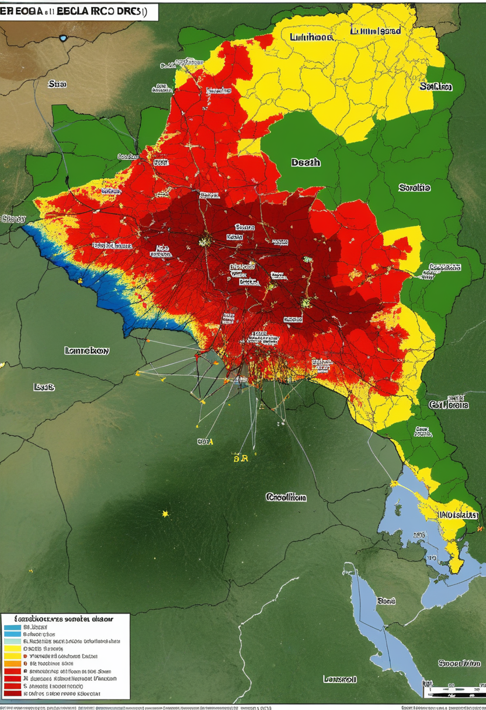
月曜日の便り。本日2026年6月29日、エボラDRC（ブンディブギョ型）は6月24日のフランス輸入確認でEUに初上陸し、累計1,155例・304死亡でPHEIC継続中。The Lancet Infectious Diseases（6/25）の確率論モデルは南スーダンへの波及確率を37.5%と試算しており、感染の第2段階が視野に入った。SMAでは6月4日にサラネルセン（BIIB115）がFDA突破口療法指定を取得し、遺伝子治療後も進行する患者への新しい柱が動き始めた。宇宙ではEuclid Q2データが銀河中心バルジを空前の解像度で公開し、JWSTがオリオン大分子雲を鮮明に捉えた。天と地で同時に更新が続く月曜の朝。
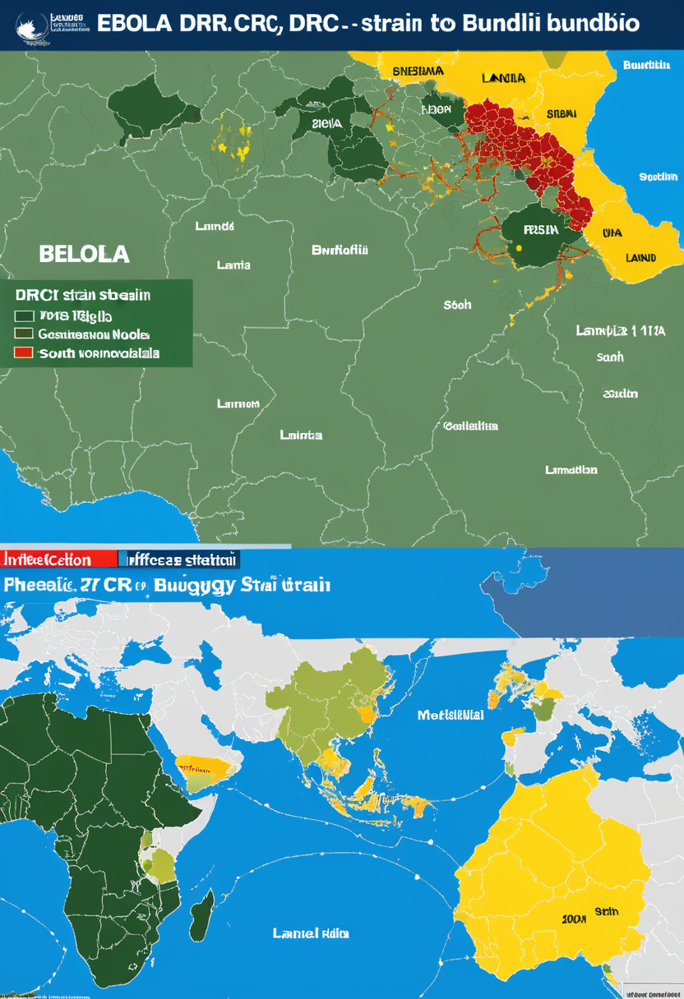
6/28号の続報——2026年6月24日、フランス保健省がDRC帰還の医師からエボラ（ブンディブギョ型）の輸入症例を確認し、EUでは初の感染国となった（ドイツは5/19に確認済み）。6月26日時点のWHO DON-608では累計1,155例・304死亡（入院中385名）で、3日間で約240例増加という急拡大が続く。The Lancet Infectious Diseases（6/25、DOI: 10.1016/S1473-3099(26)00320-8）の確率論的モデルはウガンダ79.9%・南スーダン37.5%・ルワンダ3.0%の越境波及確率を試算。同モデルの12週累積中央値229例に対し現実は1,155例と大幅超過しており、感染速度が科学的予測の上限を超えていることを示している。ブンディブギョ型に有効なワクチン・治療薬は存在せず、接触追跡と隔離のみに頼る構造のなかで南スーダンへの波及抑止が次の最優先事項となる。
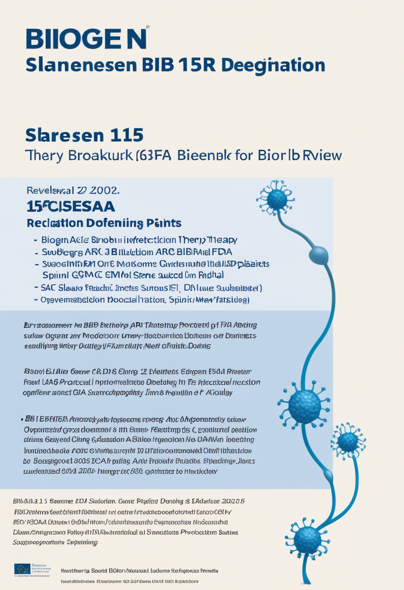
Biogenのサラネルセン（salanersen）が2026年6月4日にFDA突破口療法指定（Breakthrough Therapy Designation）を取得。Phase 1b探索解析で、遺伝子治療後に最適転帰が得られなかった患者で神経変性の進行抑制と運動機能改善が示された。スピンラザ（ヌシネルセン）の後継薬として年1回の髄腔内投与を目指すこの薬は、BTD取得によりFDAとの緊密な対話と審査の迅速化が期待される。2026年後半はアピテグロマブPDUFA 9/30とBIIB115 Phase 3始動が重なり、SMA治療戦略の大きな転換点となる。
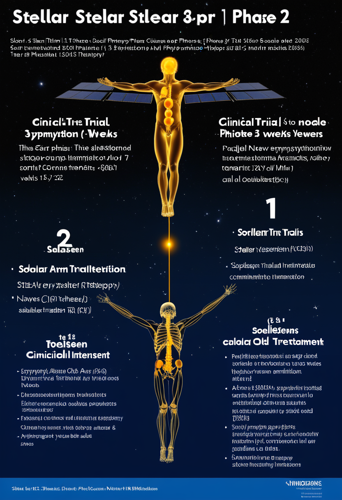
Biogenは三つのPhase 3試験を並行展開。STELLAR-1は6週齢未満・未治療の前症状乳児にサラネルセン単剤（スクリーニング開始済み）。SOLAR（2026年Q2開始）は15〜60歳・治療歴なし〜リスジプラム経験者90名を対象に単剤評価。STELLAR-2（Q3開始予定）はゾルゲンスマ投与済みの7か月以下乳児42名に対し遺伝子治療単剤・サラネルセン単剤・両者の上乗せ3群を比較する多腕設計。SMAの「治療シーケンシング最適化」という未解決課題に正面から取り組む包括的試験群で、2027〜2028年に結果が出る見込み。
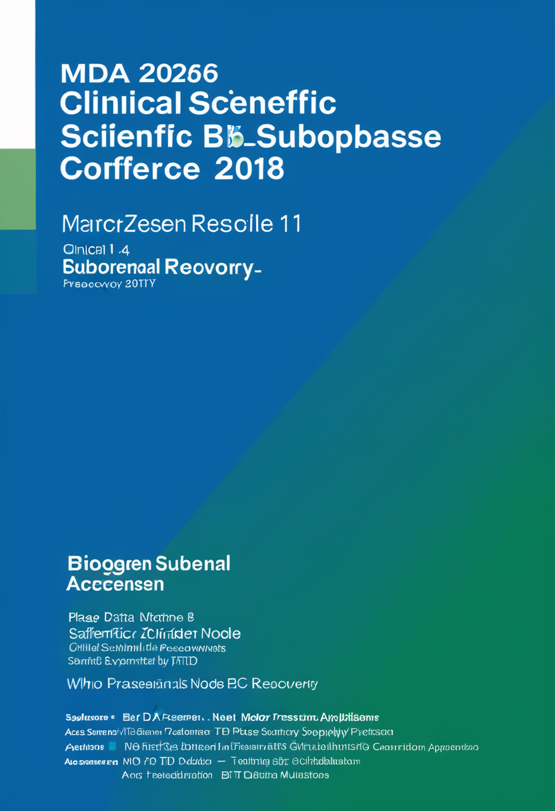
2026年3月11日のMDA臨床・科学カンファレンスでBiogenがPhase 1b追加データを発表。ゾルゲンスマ後に最適転帰が得られなかった小児患者にサラネルセンを投与し、新たなWHO運動マイルストーンの達成と神経変性の進行抑制が示された。忍容性も良好で、このデータがFDA突破口療法指定申請の探索的根拠となった。遺伝子治療単独では不十分なケースへの「追加・救済」選択肢として治療戦略の第2の柱が確立しつつあり、新生児スクリーニング後の最適治療シーケンシングを問い直す局面に入った。
サラネルセンBTD取得で「遺伝子治療後も進行するSMA」への第2の選択肢が現実化した。STELLAR/SOLARが2027〜2028年に答えを出す前に、今年はアピテグロマブPDUFA（9/30）という大きな判定日が待っている。
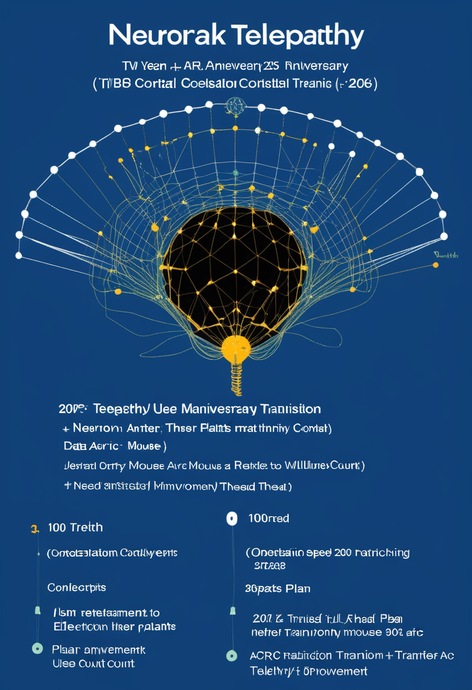
Neuralinkが公開したTelepathy 2周年レポートによると、臨床試験参加者（Neuronauts）は26名に達した。複数名がデータ転送速度10 bps超を達成し、健常者のマウス操作速度（8〜10 bps）に匹敵する。第1号患者Nolandは大学に復学して神経科学を専攻し、参加者Alexは3DCADとAdobe Illustratorを独力で使用している。2026年中に電極数を1,000本から3,000本へ増加予定、硬膜除去なしで挿入する完全自動化手術への移行も進行中。スレッドの後退問題は改善措置後の18名/20名で高い信号品質を維持している。
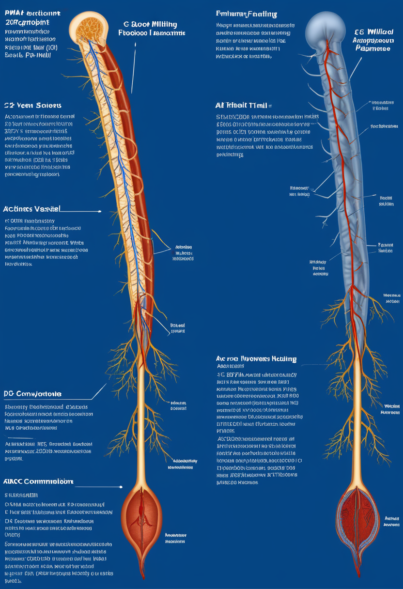
Synchronは2025年11月に2億ドルのシリーズDを完了し、2026年のピボタル試験（INTENT試験）でFDA PMA申請を目指す。血管内留置型Stentrodeは静脈造影のみでインプラント可能で開頭手術が不要という点がNeuralink等と異なる技術的優位。COMMAND初期実行可能性試験では6名全員が「埋め込み後1年間で重篤デバイス関連有害事象ゼロ」を達成済み。FDA承認取得後は第1世代商用製品の準備も並行して進められている。
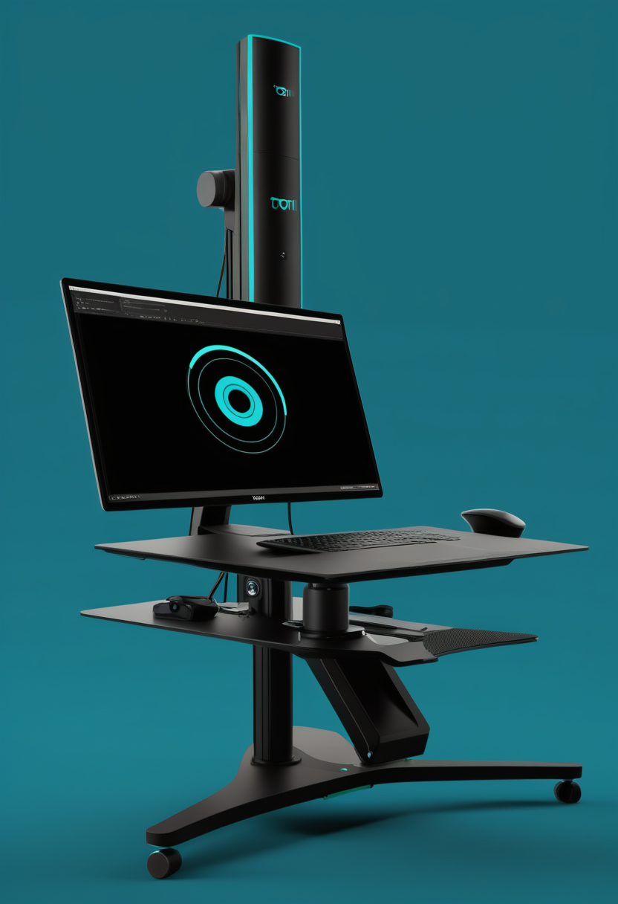
Tobiiがウェブカメラ単体で動作する視線追跡ツールの分散型オンライン研究版を公開（現地研究用ローカル版は2026年後半予定）。専用アイトラッカー不要での眼球運動計測が実現し、BCI補助入力・認知科学・UX研究などでのデータ収集コストが大幅に低減される。実験室に集まる必要なく視線データを収集できる「研究のリモート化」を加速させる一歩で、眼球追跡技術の民主化という面では視線入力ユーザーの生態そのものを変えうる潜在的なインパクトを持つ。
Neuralink 10 bps達成は「BCIが健常者の操作速度に追いつく」という転換点を示す。SynchronはFDA PMAへの最短経路を着実に進み、Tobiiのソフトウェア化は視線追跡の裾野を一気に広げる。
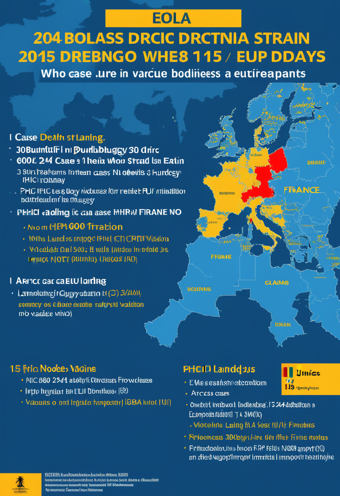
6月26日時点のWHO報告でDRC計1,155例・304死亡（イトゥリ州1,054例・北キヴ98例・南キヴ3例）。ウガンダは20例・2死亡で6/5以降の新規報告ゼロ。欧州はドイツ（5/19）・フランス（6/24）の2か国で輸入例を確認済み。わずか3日で約240例増という急増ペースが続いており、ブンディブギョ型に有効なワクチン・治療薬が存在しないなかでのPHEIC継続が最深刻な感染症課題となっている。
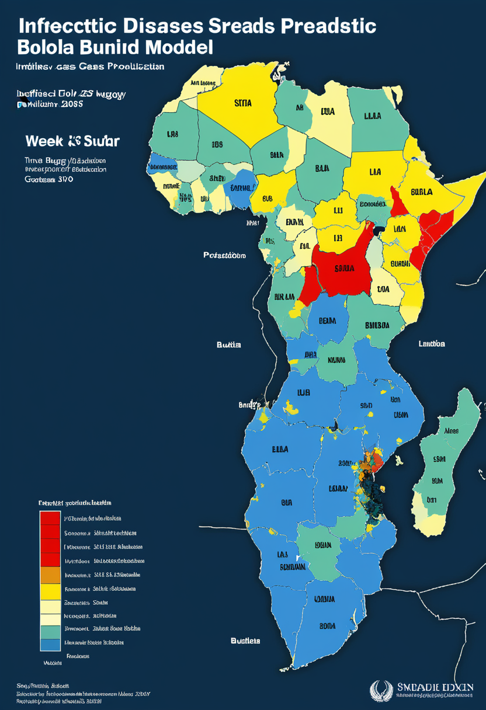
The Lancet Infectious Diseases（6/25、DOI: 10.1016/S1473-3099(26)00320-8）が公開した確率論的拡散モデルはウガンダ79.9%・南スーダン37.5%・ルワンダ3.0%・ブルンジ0.4%の越境波及確率を推計。モデルの12週時点累積中央値は229例（90%予測区間143〜358例）だったが、現実は6/26時点で1,155例と上限の3倍以上に達している。モデルが「現実に敗北」するほど感染が加速しており、南スーダンへの波及抑止を優先する対応強化の転換点として国際的な注目が集まっている。
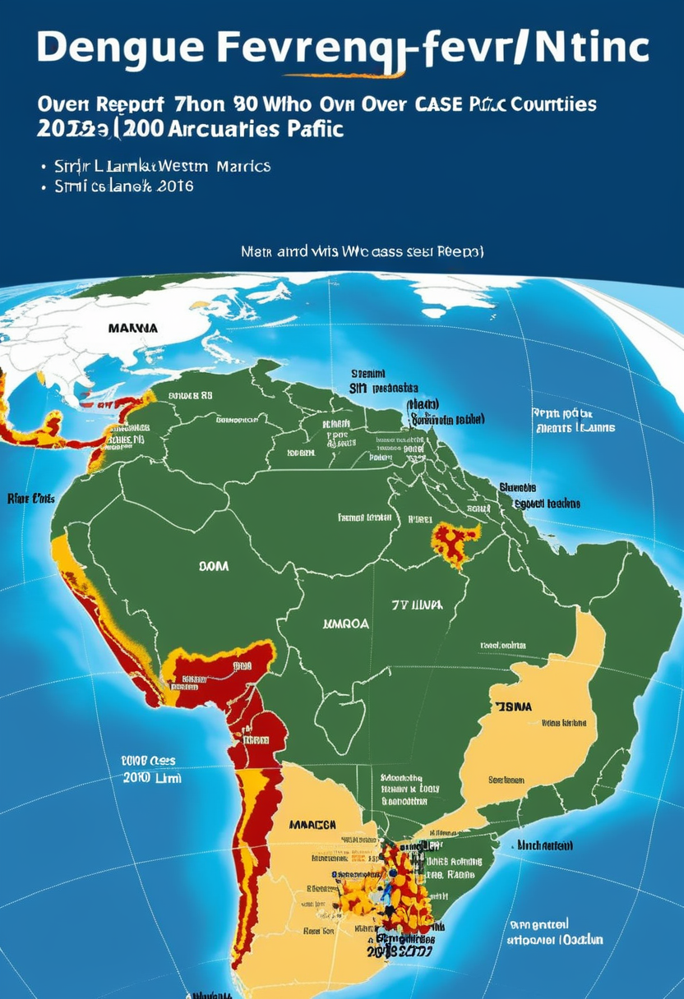
WHO西太平洋地域報告（3月19日、742号）によると、2026年1〜3月に78か国・地域がデング熱症例を報告し全世界で50万例超・100死亡超。スリランカは47,530例・29死亡（6/22時点）で2019年以来最大の感染爆発が加速中（前号比+3,530例）。サモアは2025年1月以来の累計19,764例・9死亡。米州は2024年比64%減の後退局面だがアジア太平洋では気候変化とともに流行地域が拡大しており、エボラPHEIC継続中にデングが複合的に加わり公衆衛生への負荷が増大している。
エボラの感染速度はLancetの科学モデル上限を3倍超で超過した。南スーダン37.5%の波及確率が現実化すれば対応規模は今の数倍が必要になる。デング熱の複合負荷も続いている。
2026年6月24日、ESAがEuclid宇宙望遠鏡の第2次Quick Data Release（Q2）を公開。銀河中心バルジ4.8平方度を9フィールドにわたりVISカメラで撮影（分解能0.16秒角、各フィールド総露出1.8時間）。主目的は重力マイクロレンズ効果によるレンズ質量測定（精度10%以内）で、全星の位置・測光カタログも同時公開。系外惑星探索・恒星人口統計・銀河中心構造解析への活用が期待される。arXiv論文（2606.25883）は6月25日付で公開され、天の川銀河の精密地図更新が本格化した。
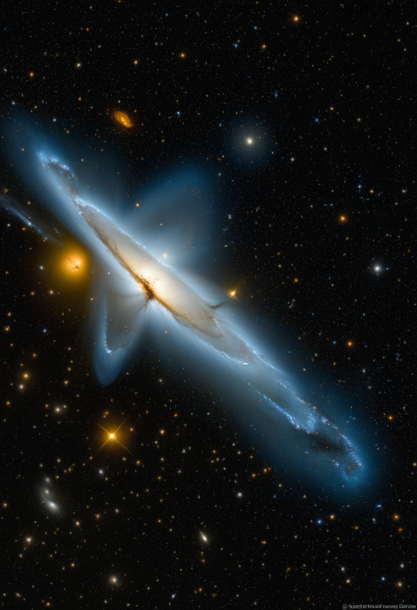
NASAのJWSTが6月22日、銀河系内最大級の星形成領域オリオンA（距離約1,500光年）を前例のない精細度で撮影した画像を公開。乱流ガスと塵の微細構造、埋め込まれた原始星が鮮明に捉えられ、銀河系の星形成率・初期条件の理解を大幅に前進させた。JWSTは6月5日に恒星間彗星3I/ATLASもNIRSpecで観測するなど、6月だけで複数の重要データを提供している。Euclid Q2と合わせ「銀河系の外縁と中心から同週にデータが来る」という観測史の新局面となった。
CNSAの天問2号は6月以降カモオアレワ（469219）への接近フェーズに入り、7月4日に20km圏内への最接近を予定。サンプル採取は2026年7月、地球帰還は2026年末〜2027年初頭を計画。arXiv（2606.25512）では最新の軌道計測・物理特性解析が公開され、月起源説への再検証も進行中。カモオアレワは月と同じ酸素同位体比を持つ可能性があり「亡命月岩石」仮説の検証が次の焦点で、7月4日は宇宙史的にマークすべき日付となる。
Euclid Q2とJWSTが同週に銀河の内側と近傍から高精度データを届け、宇宙物理の精度が急加速している。Tianwen-2は7月4日最接近と月起源仮説の検証という歴史的瞬間へと秒読みに入った。
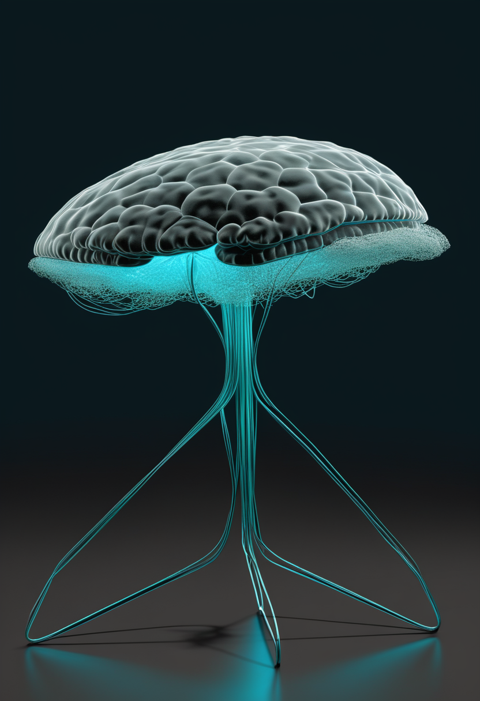
Eon Systems PBCが2026年3月、ショウジョウバエの神経コネクトームを高忠実度仮想シミュレーションプラットフォームへ移植し行動を再現した。肉体の物理的転送なしに「挙動のデジタルコピー」を成立させた初期実証として位置付けられる。研究者らは同時に「生物脳の視点では新たな独立存在であり、元の自己の連続とは言えない」というsubstrate identity problemを提起しており、人間への応用拡張に向けた倫理的議論の起点となっている。技術が社会の答えより速く進む状況が改めて浮き彫りになった。
2026年4月のSingularity Hub解説によると、現行のパーソナライズ脳デジタルツインは各脳固有のアーキテクチャを捉えられておらず「双子というより遠縁の従兄弟」レベルと評価される。刺激・疾患・薬物応答のシミュレーションでは有望な成果が出始めているが、全脳規模の個別化モデル構築には計算資源・教師データ・理論モデルの3面で大きな跳躍が必要。arXiv論文（2601.01539）はBCIへの応用を念頭にニューラルデジタルツインを次世代インターフェースの基盤として位置付けており、臨床応用への道のりの遠さと潜在的な変革力の両方を示している。
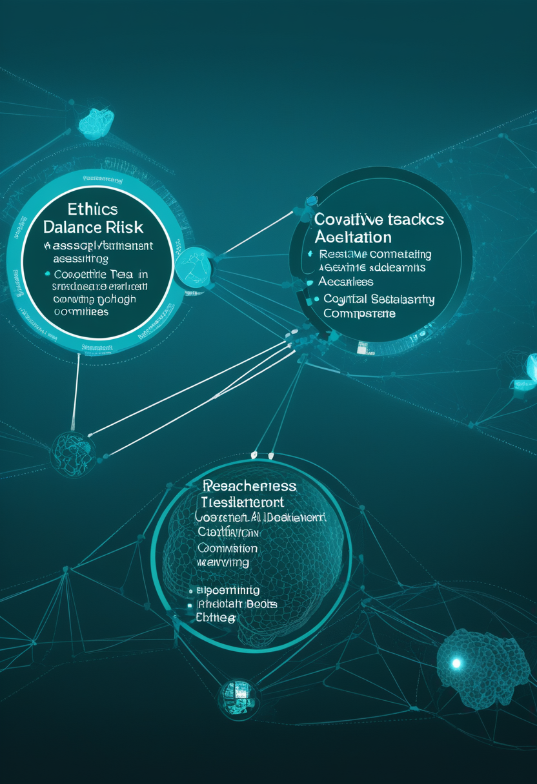
2026年初頭、Trends in Cognitive Sciences誌がPatrick Butlin・Yoshua Bengio・Tim Bayneら19名の意識研究者による確率論的AI意識評価ツールを公表し「倫理的枠組みなしに意識を持つAIを生み出す道徳的リスク」を警告（6/28既報）。本号では、この警告を受けて大手テック企業複数社が2026年に独立倫理委員会を設置する動きが加速しており、AIの法的地位をめぐる議論も複数の立法機関で始まっているという進展を付記する。技術の進歩に先行する形で社会的合意形成が求められている構図は、WBEのsubstrate identity問題と通底している。
ショウジョウバエ脳エミュレーション成功は「自己の連続性とは何か」という問いを技術が先行する形で突きつけた。脳デジタルツインの個別化の壁と、AI意識の法的地位という2つの問題が2026年に同時進行している。
本日2026年6月29日、月曜日。エボラDRCは1,155例・304死亡でEUに初上陸し、Lancetの確率モデルが「南スーダン37.5%」という次の局面を示した。感染速度はモデルの上限を3倍超で超過しており、接触追跡と隔離のみに頼る対応の限界が問われている。SMAではサラネルセンがFDA突破口療法指定を取得し、遺伝子治療後も進行する患者への新しい選択肢が動き始めた。宇宙ではEuclid Q2とJWSTが同週に銀河の内と近傍から精密データを届け、Tianwen-2が7月4日の歴史的最接近へと秒読みに入った。ショウジョウバエ脳のデジタルコピーが成立した一方で、「それは自分の続きか」という問いに答えはまだない。
脅威を知ることと、先へ進むことは、矛盾しない。おはようございます。